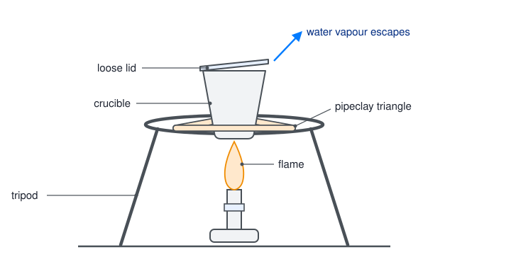
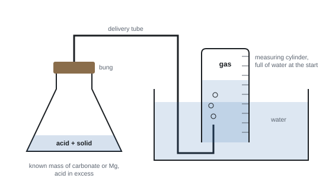

Formulae, equations and amounts of substance
Atoms are far too small to count one at a time, so chemists count them by weighing, by measuring gas volumes and by measuring solution volumes. This topic builds the idea of the mole, the three equations that link it to things you can measure, and the balanced equations that tell you how much of each substance reacts and forms. Almost every calculation in A level chemistry rests on what is here.
Spec1.1Atoms, elements, ions, molecules, compounds and formulae
Know what is meant by atom, element, ion, molecule, compound, empirical formula and molecular formula.
The words you must keep apart
| Term | Meaning | Examples |
|---|---|---|
| Atom | the smallest particle of an element that keeps its chemical identity; neutral (protons = electrons) | Na, C, Ar |
| Element | a substance made of only one type of atom (all atoms have the same number of protons) | sodium, oxygen (O₂), ozone (O₃), diamond |
| Ion | an atom or group of atoms carrying an overall charge, because electrons have been lost or gained | Na⁺, Cl⁻, NH₄⁺, SO₄²⁻ |
| Molecule | two or more atoms held together by covalent bonds, as a discrete particle | O₂, H₂O, CH₄ |
| Compound | a substance made of two or more elements chemically bonded together | H₂O, NaCl, CO₂ |
| Empirical formula | the simplest whole-number ratio of atoms of each element in a compound | CH₂O for glucose |
| Molecular formula | the actual number of atoms of each element in one molecule | C₆H₁₂O₆ for glucose |
Quick sort: which words fit?
| Species | Element or compound? | Particle type |
|---|---|---|
| Ne | element | atom |
| O₂ and O₃ | element (two different molecules of the same element) | molecule |
| H₂O | compound | molecule |
| NaCl | compound | not a molecule: a giant ionic lattice; NaCl is its formula unit |
| SiO₂ | compound | not a molecule: a giant covalent lattice |
| NH₄⁺ | part of a compound | ion (a polyatomic ion) |
Empirical vs molecular formula
| Substance | Molecular formula | Empirical formula |
|---|---|---|
| ethane | C₂H₆ | CH₃ |
| butane | C₄H₁₀ | C₂H₅ |
| benzene | C₆H₆ | CH |
| glucose | C₆H₁₂O₆ | CH₂O |
| water | H₂O | H₂O (same) |
- Divide the subscripts by their highest common factor to get the empirical formula.
- Giant structures (ionic or giant covalent) have only an empirical formula: NaCl, SiO₂, MgO. There is no "molecule" to count.
Counting hydrogens in a skeletal formula one by one is slow and error-prone. Count the carbons, start from the alkane formula CnH2n+2, then subtract 2 H for every C=C and for every ring. Don't forget the carbons in methyl branches.
- Molecular formula = "the actual number of atoms of each element"; empirical formula = "the simplest whole-number ratio".
- For a giant structure say "relative formula mass", not relative molecular mass.
Often asked as: MCQs on formulae and particles; give both the empirical and the molecular formula of an alkene or alkane; work out a molecular formula from a skeletal formula.
Giving the molecular formula when the empirical formula is asked for (or the other way round). Calling NaCl or SiO₂ a "molecule". Mixing up "atom" and "ion" when counting electrons or charges.
- Working out the molecular formula of a big natural molecule (rings plus several C=C bonds) from its skeletal formula (WCH11 Jun 2022).
- Using the alkane general formula to get the formula of a large alkane such as squalane (WCH11 Jan 2021).
Spec1.2The mole and the Avogadro constant
Know that the mole is the unit of amount of substance, and use the Avogadro constant (6.02 × 10²³ mol⁻¹) in calculations.
What a mole is
- A mole is the amount of substance that contains 6.02 × 10²³ particles. This number is the Avogadro constant, L (or NA), units mol⁻¹.
- It is the number of atoms in exactly 12 g of carbon-12. So 1 mol of any substance has a mass in grams equal to its relative mass (molar mass, 1.4).
- The "particles" can be atoms, molecules, ions, electrons or formula units. Always say which.
The three links you use all the time
| Want | Use | Units |
|---|---|---|
| moles from mass | n = m ÷ M | m in g, M in g mol⁻¹ |
| number of particles from moles | N = n × L | L = 6.02 × 10²³ mol⁻¹ |
| moles from particles | n = N ÷ L |
The route is always mass ⇄ moles ⇄ particles. Go through moles.
Worked example: atoms in a mass of a gas
How many atoms are in 5.60 g of nitrogen gas, N₂?
Moles of N₂ = 5.60 ÷ 28.0 = 0.200 mol
Each N₂ molecule has 2 atoms, so moles of N atoms = 0.400 mol
Atoms = 0.400 × 6.02 × 10²³ = 2.41 × 10²³ atoms
(If the question asked for molecules, the answer would be 1.20 × 10²³.)
Worked example: molecules from tonnes
How many molecules are in 1.00 tonne of ethene, C₂H₄ (M = 28.0 g mol⁻¹)?
1.00 tonne = 1.00 × 10⁶ g
Moles = 1.00 × 10⁶ ÷ 28.0 = 3.57 × 10⁴ mol
Molecules = 3.57 × 10⁴ × 6.02 × 10²³ = 2.15 × 10²⁸ molecules
Don't multiply by 6 here: 6 would give atoms, and the question asked for molecules.
Worked example: counting ions and electrons
(a) 17.1 g of aluminium sulfate, Al₂(SO₄)₃ (M = 342.3 g mol⁻¹). Moles = 17.1 ÷ 342.3 = 0.0500 mol.
Each formula unit holds 2 Al³⁺ + 3 SO₄²⁻ = 5 ions, so ions = 5 × 0.0500 × 6.02 × 10²³ = 1.50 × 10²³ ions.
(b) 1.00 g of Mg²⁺ ions. Moles = 1.00 ÷ 24.3 = 0.0412 mol. Each Mg²⁺ has 12 − 2 = 10 electrons.
Electrons = 10 × 0.0412 × 6.02 × 10²³ = 2.48 × 10²³ electrons.
(c) Mass of one carbon-12 atom = 12.0 ÷ 6.02 × 10²³ = 1.99 × 10⁻²³ g.
Huge and tiny numbers are normal here. Use the EXP or ×10ˣ key, keep the full calculator value between steps, and round only the final answer (usually 3 s.f.).
How many atoms are there in 5.00 g of aluminium? (\(A_\mathrm{r}\): Al = 27.0)
Find the amount: \( n = \dfrac{m}{M} = \dfrac{5.00}{27.0} = 0.1852\ \mathrm{mol} \)
Keep the unrounded value in your calculator for the next step.
Multiply by the Avogadro constant: \( N = 0.1852 \times 6.02 \times 10^{23} = 1.11 \times 10^{23} \) atoms
How many atoms are there in 0.500 mol of ammonia, NH3?
Number of molecules: \( 0.500 \times 6.02 \times 10^{23} = 3.01 \times 10^{23} \)
Each molecule contains 4 atoms (one N and three H), so the number of atoms is \( 4 \times 3.01 \times 10^{23} = 1.20 \times 10^{24} \).
The same idea gives the mass of a single atom: one carbon-12 atom has a mass of \( 12 \div (6.02 \times 10^{23}) = 1.99 \times 10^{-23}\) g.
- Show moles first, then multiply by 6.02 × 10²³.
- Count atoms when the question says atoms (×2 for N₂, ×6 for C₂H₄ and so on), and molecules when it says molecules.
Often asked as: MCQs on numbers of particles or formula units; atoms in a mass of gas; molecules in a mass given in tonnes or kg; molecules allowed in a room (with ppm).
Mixing up atoms and molecules, which halves or doubles the answer. An extra factor of 6 when counting molecules of ethene. Dividing by L when you should multiply.
- Unit conversions given in the stem: tonnes → kg → g (WCH11 Jan 2020), hectares → km² (WCH11 Jan 2021).
- Choosing between formula units and individual ions in an MCQ (WCH11 Jan 2026).
Spec1.3Balanced full and ionic equations with state symbols
Write balanced full equations and ionic equations, with state symbols, for chemical reactions.
Balancing a full equation
- Write the correct formula for every reactant and product (use the ion charges below for ionic compounds).
- Count the atoms of each element on both sides.
- Balance by changing the numbers in front (coefficients). Never change a subscript: that changes the substance.
- For combustion, balance C first, then H, then O last. A fraction such as 11/2 O₂ is allowed (or double everything).
- Add state symbols: (s) solid, (l) liquid, (g) gas, (aq) dissolved in water.
Worked example: combustion
Complete combustion of heptane (a liquid):
C: 7 C → 7CO₂. H: 16 H → 8H₂O. O on the right = 14 + 8 = 22 atoms = 11 O₂.
C₇H₁₆(l) + 11O₂(g) → 7CO₂(g) + 8H₂O(l)
Dodecane: C₁₂H₂₆(l) + 18½O₂(g) → 12CO₂(g) + 13H₂O(l) (or double it: 2C₁₂H₂₆ + 37O₂ → 24CO₂ + 26H₂O).
Ions you need to know
| Positive ions | Negative ions |
|---|---|
| H⁺, Na⁺, K⁺, Li⁺, Ag⁺, NH₄⁺ | OH⁻, Cl⁻, Br⁻, I⁻, NO₃⁻, HCO₃⁻ |
| Mg²⁺, Ca²⁺, Ba²⁺, Zn²⁺, Cu²⁺, Fe²⁺, Pb²⁺ | O²⁻, S²⁻, SO₄²⁻, CO₃²⁻ |
| Al³⁺, Fe³⁺, Cr³⁺ | PO₄³⁻, N³⁻ |
To write an ionic formula, balance the charges: Al³⁺ and SO₄²⁻ need 2 × (+3) = 3 × (−2), so Al₂(SO₄)₃. Use brackets around a polyatomic ion when you need more than one.
Writing an ionic equation
- Write the balanced full equation with state symbols.
- Split every aqueous ionic compound (and strong acid) into its ions. Leave solids, liquids (including water), gases and covalent molecules as they are.
- Cancel the ions that appear unchanged on both sides (spectator ions).
- Check that atoms and charges balance.
Worked example: ionic equations
Precipitation. AgNO₃(aq) + NaCl(aq) → AgCl(s) + NaNO₃(aq)
Split: Ag⁺ + NO₃⁻ + Na⁺ + Cl⁻ → AgCl(s) + Na⁺ + NO₃⁻. Na⁺ and NO₃⁻ are spectators.
Ag⁺(aq) + Cl⁻(aq) → AgCl(s)
Acid + carbonate. BaCO₃(s) + 2HCl(aq) → BaCl₂(aq) + CO₂(g) + H₂O(l)
BaCO₃ is a solid, so it stays whole. Cl⁻ is the spectator.
BaCO₃(s) + 2H⁺(aq) → Ba²⁺(aq) + CO₂(g) + H₂O(l)
Charge check: left +2, right +2.
Work ionic equations out every time; don't try to recall them. Underlined words such as "including state symbols" in the stem mean the second mark is for states.
Start with the balanced full equation, including state symbols:
AgNO3(aq) + NaCl(aq) → AgCl(s) + NaNO3(aq)
Split every aqueous ionic compound into its ions:
Ag+(aq) + NO3−(aq) + Na+(aq) + Cl−(aq) → AgCl(s) + Na+(aq) + NO3−(aq)
AgCl is a solid precipitate, so it stays together.
Cross out ions that appear unchanged on both sides (Na+ and NO3−):
Ag+(aq) + Cl−(aq) → AgCl(s)
Check the charges: 1+ and 1− on the left give zero overall, and so does the neutral solid on the right. Any soluble silver salt mixed with any soluble chloride gives this same equation, which is why ionic equations are so useful.
- Usually 2 marks: M1 correct formulae and balancing; M2 state symbols (only if M1 is correct or a near miss).
- "Allow multiples" of a balanced equation.
- In ionic equations, cancel spectator ions: "do not award uncancelled chloride ions" (WCH11 Oct 2022). One paper let uncancelled ions through, but don't rely on it.
- Acid + carbonate: the products are CO₂ + H₂O. "Do not award H₂CO₃ as a product".
- Water in a combustion equation may be (l) or (g).
Often asked as: combustion of an alkane; correct a wrong equation; build an ionic equation for a precipitation, displacement or acid reaction; MCQ "which is the ionic equation for…".
- State symbols left out, even when the question underlines them. A liquid fuel such as heptane is (l), not (aq). Ions in solution are (aq), not (l).
- Halogens written as atoms: it is Cl₂, Br₂, not Cl or Br.
- Wrong ion charges (Ag⁺, not Ag²⁺; Cu²⁺ in copper(II) compounds). Learn the table above.
- Writing water as the product of a metal + acid. The gas is hydrogen.
- Predicting formulae of unfamiliar products from ion charges, e.g. Cr₂O₃, Cu(NO₃)₂, Na₂HPO₄ (WCH11 Oct 2019).
- Balancing a decomposition: 2FeSO₄·7H₂O → Fe₂O₃ + SO₂ + SO₃ + 14H₂O (WCH11 Jun 2021).
- Equations for thermal and photo-decomposition, e.g. 2AgCl(s) → 2Ag(s) + Cl₂(g) (WCH11 Jun 2024).
Spec1.4Relative masses, molar mass and parts per million
(i) Relative atomic mass on the ¹²C scale. (ii) Relative molecular mass and relative formula mass, calculated from Ar values ("formula mass" for giant structures). (iii) Molar mass in g mol⁻¹. (iv) Parts per million (ppm), including gases in the atmosphere.
The ¹²C scale
Atoms are far too light to weigh in grams, so their masses are compared with one-twelfth of the mass of a carbon-12 atom, which is defined as exactly 12.
| Term | Definition (exam wording) |
|---|---|
| Relative isotopic mass | the mass of an atom of one isotope compared with 1/12 of the mass of an atom of carbon-12 |
| Relative atomic mass, Ar | the weighted mean (average) mass of an atom of an element compared with 1/12 of the mass of an atom of carbon-12 |
| Relative molecular mass, Mr | the sum of the Ar values of all the atoms in one molecule (simple molecular substances) |
| Relative formula mass | the same sum for one formula unit of a giant structure (ionic or giant covalent: NaCl, MgO, SiO₂) |
| Molar mass, M | the mass of one mole of a substance, in g mol⁻¹; numerically equal to Ar or Mr |
- Ar is a weighted mean because most elements are mixtures of isotopes (2.6 shows how to calculate it). That's why chlorine's Ar is 35.5, not a whole number.
- Relative masses have no units. Molar mass has units of g mol⁻¹.
Worked example: relative formula mass of a hydrate
CuSO₄·5H₂O (Ar: Cu 63.5, S 32.1, O 16.0, H 1.0)
CuSO₄ = 63.5 + 32.1 + (4 × 16.0) = 159.6
5H₂O = 5 × 18.0 = 90.0
Relative formula mass = 159.6 + 90.0 = 249.6 (molar mass 249.6 g mol⁻¹)
The dot means "plus": add the water, don't multiply by it.
Parts per million (ppm)
- ppm = parts per million: the number of parts of a substance in every million (10⁶) parts of the mixture.
- ppm = (amount of the substance ÷ total amount) × 10⁶, using the same units top and bottom.
- For solutions and solids it is usually by mass (1 ppm = 1 mg per kg, or about 1 mg per dm³ of water). For gases in the atmosphere it is by volume (1 ppm = 1 cm³ of the gas in every 10⁶ cm³ = 1 m³ of air).
- Useful conversion: 1% = 10 000 ppm. CO₂ in air at about 420 ppm is 0.042%.
Worked example: ppm
(a) A toothpaste contains 1.45 mg of fluoride in every 1.00 g of paste.
ppm = (1.45 × 10⁻³ g ÷ 1.00 g) × 10⁶ = 1450 ppm
(b) The safe limit of a gas is 1.1 ppm by volume. What volume of the gas can a 50.0 m³ room hold?
Volume of gas = 50.0 × 1.1 ÷ 10⁶ = 5.5 × 10⁻⁵ m³ = 55 cm³
Check that the answer makes sense: a few tens of cm³ in a whole room is plausible.
What amount of CuSO4·5H2O is in 2.50 g of the blue crystals?
\( M = 63.5 + 32.1 + (4 \times 16.0) + (5 \times 18.0) = 249.6\ \mathrm{g\,mol^{-1}} \)
Each H2O has \(M = 18.0\). Forgetting the water, and using 159.6, is the usual error.
\( n = \dfrac{2.50}{249.6} = 0.0100\ \mathrm{mol} \)
A 250 g sample of fish contains 0.100 mg of mercury. What is its mercury content in ppm by mass?
Use the same units for both masses: \( 0.100\ \mathrm{mg} = 1.00 \times 10^{-4}\ \mathrm{g} \)
\( \text{ppm} = \dfrac{1.00 \times 10^{-4}}{250} \times 10^{6} = 0.400\ \text{ppm} \)
The other way round: air contains about 420 ppm of carbon dioxide by volume, so 1.00 dm3 of air holds \( 420 \times 10^{-6} \times 1.00 = 4.20 \times 10^{-4}\ \mathrm{dm^3} \), which is 0.420 cm3 of CO2.
- Ar definition (2 marks): M1 "weighted mean mass / average mass of an atom" (the word atom must be there); M2 "compared to 1/12 (the mass) of a ¹²C atom". "Element" and "isotopes" are ignored.
- Give an Ar to the number of s.f. or d.p. asked: 35.49, not 35.4938.
- ppm: write out "parts per million", then set out as part ÷ whole × 10⁶.
Often asked as: define relative atomic mass; calculate Ar from abundances (2.6); say what ppm means; ppm of fluoride in toothpaste, of a pollutant in a room, or a gas "mixing ratio".
- Leaving out "mean", "carbon-12" or "1/12" in the Ar definition. Writing "mass of an element" instead of "mass of an atom".
- Saying "relative molecular mass" for an ionic compound: use relative formula mass.
- Getting a ppm answer that is obviously silly (a room volume of 10⁻⁹ dm³) and not checking it.
- A weighted mean in a new context, e.g. the average property of a fuel blend such as E10 (WCH11 Oct 2023).
- Unfamiliar concentration units for gases, such as g m⁻³ (WCH11 Oct 2022).
Spec1.5Concentration in mol dm⁻³ and g dm⁻³
Calculate the concentration of a solution in mol dm⁻³ and in g dm⁻³. (Titration calculations come later.)
The equations
- Concentration (mol dm⁻³) = moles ÷ volume in dm³, so n = c × V.
- Concentration (g dm⁻³) = mass ÷ volume in dm³.
- Convert between them with the molar mass: g dm⁻³ = mol dm⁻³ × M.
- 1 dm³ = 1000 cm³. Divide cm³ by 1000 to get dm³ before you use these equations.
Worked example: making a solution
(a) 2.00 g of NaOH (M = 40.0) is dissolved to make 250 cm³ of solution.
Moles = 2.00 ÷ 40.0 = 0.0500 mol. Volume = 250 ÷ 1000 = 0.250 dm³.
c = 0.0500 ÷ 0.250 = 0.200 mol dm⁻³; in g dm⁻³: 2.00 ÷ 0.250 = 8.00 g dm⁻³.
(b) What mass of CuSO₄·5H₂O (M = 249.6) makes 100 cm³ of 0.150 mol dm⁻³ solution?
Moles = 0.150 × 0.100 = 0.0150 mol. Mass = 0.0150 × 249.6 = 3.74 g.
Use the hydrate's molar mass because the hydrate is what you weigh.
Worked example: ion concentrations and dilution
(a) 0.100 mol dm⁻³ Al₂(SO₄)₃: [Al³⁺] = 2 × 0.100 = 0.200 mol dm⁻³; [SO₄²⁻] = 3 × 0.100 = 0.300 mol dm⁻³.
(b) 25.0 cm³ of 2.00 mol dm⁻³ HCl is made up to 250.0 cm³ with water. Moles don't change:
c = 2.00 × 25.0 ÷ 250.0 = 0.200 mol dm⁻³.
Worked example: minimum concentration of acid
0.200 g of MgCO₃ (M = 84.3) must react completely with 25.0 cm³ of hydrochloric acid.
MgCO₃ + 2HCl → MgCl₂ + CO₂ + H₂O
Moles of MgCO₃ = 0.200 ÷ 84.3 = 2.37 × 10⁻³ mol, so HCl needed = 2 × 2.37 × 10⁻³ = 4.74 × 10⁻³ mol.
Minimum c = 4.74 × 10⁻³ ÷ 0.0250 = 0.190 mol dm⁻³.
A "minimum" must not be rounded down: 0.18 would not be enough acid.
3.18 g of anhydrous sodium carbonate, Na2CO3, is dissolved in water and made up to 250.0 cm3. Find its concentration in mol dm−3 and in g dm−3.
\( M = (2 \times 23.0) + 12.0 + (3 \times 16.0) = 106.0\ \mathrm{g\,mol^{-1}} \), so \( n = \dfrac{3.18}{106.0} = 0.0300\ \mathrm{mol} \)
Volume in dm3: \( 250.0 \div 1000 = 0.2500\ \mathrm{dm^3} \)
\( c = \dfrac{0.0300}{0.2500} = 0.120\ \mathrm{mol\,dm^{-3}} \)
In g dm−3: \( 0.120 \times 106.0 = 12.7\ \mathrm{g\,dm^{-3}} \)
Check: 3.18 g in a quarter of a cubic decimetre is the same as 12.7 g in a whole one.
How many chloride ions are in 25.0 cm3 of 0.150 mol dm−3 calcium chloride solution?
\( n(\mathrm{CaCl_2}) = c \times V = 0.150 \times 0.0250 = 3.75 \times 10^{-3}\ \mathrm{mol} \)
Each CaCl2 gives two Cl− ions: \( n(\mathrm{Cl^-}) = 2 \times 3.75 \times 10^{-3} = 7.50 \times 10^{-3}\ \mathrm{mol} \)
\( N = 7.50 \times 10^{-3} \times 6.02 \times 10^{23} = 4.52 \times 10^{21} \) ions
What volume of water must be added to 10.0 cm3 of 2.00 mol dm−3 hydrochloric acid to dilute it to 0.250 mol dm−3?
Amount of HCl, which does not change: \( n = 2.00 \times 0.0100 = 0.0200\ \mathrm{mol} \)
Volume needed at the new concentration: \( V = \dfrac{n}{c} = \dfrac{0.0200}{0.250} = 0.0800\ \mathrm{dm^3} = 80.0\ \mathrm{cm^3} \)
Water to add \( = 80.0 - 10.0 = 70.0\ \mathrm{cm^3} \)
The concentration fell by a factor of 8, so the final volume must be 8 times the starting volume.
25.0 cm3 of sodium hydroxide solution is titrated with 0.100 mol dm−3 sulfuric acid. The titres are 22.10 (rough), 21.65, 21.55 and 21.60 cm3. Find the concentration of the sodium hydroxide.
H2SO4(aq) + 2NaOH(aq) → Na2SO4(aq) + 2H2O(l)
Mean of the concordant titres: \( (21.65 + 21.55 + 21.60) \div 3 = 21.60\ \mathrm{cm^3} \)
Leave out the rough titre. These three lie within 0.10 cm3 of each other.
Amount of acid used: \( n = 0.100 \times \dfrac{21.60}{1000} = 2.160 \times 10^{-3}\ \mathrm{mol} \)
The ratio H2SO4 : NaOH is 1 : 2, so \( n(\mathrm{NaOH}) = 4.320 \times 10^{-3}\ \mathrm{mol} \)
\( c(\mathrm{NaOH}) = \dfrac{4.320 \times 10^{-3}}{0.0250} = 0.173\ \mathrm{mol\,dm^{-3}} \)
- n = c × V with V in dm³ (cm³ ÷ 1000); g dm⁻³ = mass ÷ volume in dm³.
- Use the mole ratio from the equation before converting.
Often asked as: MCQs on concentration or the mass to weigh out; the concentration of one ion; minimum concentration of acid in a practical context.
- Leaving the volume in cm³ but quoting the answer in mol dm⁻³ (a factor of 1000 out).
- Forgetting the 1 : 2 ratio between carbonate and HCl.
- Ion concentrations: forgetting that one formula unit can release 2 or 3 of an ion.
Spec1.6Empirical and molecular formulae from experimental data
Use experimental data (masses or percentages) to calculate empirical formulae and then molecular formulae.
The method (set it out as a table)
- Write the mass (or %) of each element. If one element isn't given, find it by difference (often oxygen).
- Divide each by its Ar (not its atomic number) to get moles of atoms.
- Divide every answer by the smallest one.
- If you get a number like 1.5, 1.33 or 1.25, multiply all of them by 2, 3 or 4 to get whole numbers. Don't round 1.5 to 2.
- Write the empirical formula.
- Molecular formula: work out the Mr of the empirical formula, divide the real Mr by it, and multiply the empirical formula by the answer.
Worked example: percentages, then molecular formula
A hydrocarbon is 92.3% carbon; Mr = 78.0.
| C | H | |
|---|---|---|
| % | 92.3 | 100 − 92.3 = 7.7 |
| ÷ Ar | 92.3 ÷ 12.0 = 7.69 | 7.7 ÷ 1.0 = 7.7 |
| ÷ smallest | 1 | 1 |
Empirical formula CH (Mr 13.0). 78.0 ÷ 13.0 = 6, so molecular formula C₆H₆.
Worked example: a ratio that isn't whole
An oxide of iron is 70.0% Fe and 30.0% O.
Fe: 70.0 ÷ 55.8 = 1.25; O: 30.0 ÷ 16.0 = 1.875.
Divide by the smallest: Fe 1, O 1.50. Multiply both by 2: Fe 2, O 3 → Fe₂O₃.
Worked example: oxygen by difference
A compound contains C 54.5%, H 9.1% and oxygen only. Mr = 88.0.
O = 100 − 54.5 − 9.1 = 36.4%.
C 54.5 ÷ 12.0 = 4.54; H 9.1 ÷ 1.0 = 9.1; O 36.4 ÷ 16.0 = 2.275 → ratio 2 : 4 : 1 → C₂H₄O (Mr 44.0).
88.0 ÷ 44.0 = 2, so C₄H₈O₂. Showing the 44.0 is what earns the last mark.
Worked example: water of crystallisation
2.46 g of hydrated magnesium sulfate, MgSO₄·xH₂O, is heated to constant mass. 1.20 g of anhydrous MgSO₄ (M = 120.4) is left.
Mass of water = 2.46 − 1.20 = 1.26 g → 1.26 ÷ 18.0 = 0.0700 mol
Moles of MgSO₄ = 1.20 ÷ 120.4 = 0.00997 mol
x = 0.0700 ÷ 0.00997 = 7.02 → x = 7, MgSO₄·7H₂O. Waters of crystallisation are always whole numbers.
Worked example: from combustion products
0.840 g of a hydrocarbon burns to give 2.64 g CO₂ and 1.08 g H₂O. Its Mr is 84.0.
Moles of C = moles of CO₂ = 2.64 ÷ 44.0 = 0.0600 mol (mass of C = 0.720 g)
Moles of H = 2 × moles of H₂O = 2 × (1.08 ÷ 18.0) = 0.120 mol (mass of H = 0.120 g)
0.720 + 0.120 = 0.840 g, so there is no oxygen in the compound.
C : H = 0.0600 : 0.120 = 1 : 2 → CH₂ (Mr 14.0). 84.0 ÷ 14.0 = 6 → C₆H₁₂.
A hydrocarbon contains 85.7% carbon and 14.3% hydrogen by mass. Its \(M_\mathrm{r}\) is 56.0. Find its molecular formula.
Take 100 g, so there are 85.7 g of C and 14.3 g of H. Divide by \(A_\mathrm{r}\): C: \( 85.7 \div 12.0 = 7.14\ \mathrm{mol} \); H: \( 14.3 \div 1.0 = 14.3\ \mathrm{mol} \)
Divide by the smaller value: C: \( 7.14 \div 7.14 = 1 \); H: \( 14.3 \div 7.14 = 2.00 \). The empirical formula is CH2.
Empirical formula mass \( = 12.0 + 2.0 = 14.0 \), and \( 56.0 \div 14.0 = 4 \). The molecular formula is C4H8.
\(M_\mathrm{r}\) does not need to be exact. The multiple must be a whole number, so a measured value of 55 or 57 still points to 4.
An oxide of iron contains 69.9% iron by mass. Find its empirical formula.
Oxygen makes up the rest: \( 100 - 69.9 = 30.1\% \). Fe: \( 69.9 \div 55.8 = 1.253 \); O: \( 30.1 \div 16.0 = 1.881 \)
Divide by the smaller: Fe = 1, O = \( 1.881 \div 1.253 = 1.50 \)
1.50 is not a whole number, so double both: Fe = 2, O = 3. The empirical formula is Fe2O3.
Rounding 1.50 to 2 would give FeO2, which is wrong. Only round values that are within about 0.1 of a whole number.
4.92 g of hydrated magnesium sulfate, MgSO4·xH2O, is heated to constant mass. 2.40 g of anhydrous MgSO4 is left. Find \(x\).
Mass of water lost \( = 4.92 - 2.40 = 2.52\ \mathrm{g} \)
\( n(\mathrm{MgSO_4}) = \dfrac{2.40}{120.4} = 0.01993\ \mathrm{mol} \) and \( n(\mathrm{H_2O}) = \dfrac{2.52}{18.0} = 0.140\ \mathrm{mol} \)
\(M(\mathrm{MgSO_4}) = 24.3 + 32.1 + 4 \times 16.0 = 120.4\ \mathrm{g\,mol^{-1}}\).
Divide by the smaller amount: \( \dfrac{0.140}{0.01993} = 7.02 \), so \( x = 7 \) and the formula is MgSO4·7H2O.
- Marks for: moles of each element (mass ÷ Ar), the simplest whole-number ratio, the formula. "Correct formula with no working scores 1 mark only."
- Molecular formula: show the Mr of the empirical formula and the multiplier.
- TE (error carried forward) is given if you use a wrong Ar but the method is right.
Often asked as: empirical formula from % composition (oxygen by difference); molecular formula from Mr (sometimes Mr comes from pV = nRT, 1.8); water of crystallisation from heating data.
- Not calculating the oxygen at all; using atomic numbers instead of Ar.
- Rounding 1 : 1.5 to 1 : 2.
- Stopping at the empirical formula when the molecular formula was asked; not simplifying (C₄H₈O₂ is not an empirical formula).
- Calculating moles of O₂ when you need moles of O atoms.
- Swapping the masses of water and anhydrous salt in a hydrate question.
- The third element found by difference (WCH11 Jun 2024, Jan 2024).
- Ratios such as 1 : 1 : 1.5 that must be doubled (WCH11 Oct 2021).
- Formula of a hydrate from a % of the anhydrous salt, e.g. 78.5% anhydrous: use ×100 ÷ 78.5, not × 78.5 (WCH11 Oct 2019).
Spec1.7Reacting masses
Use balanced equations to calculate reacting masses (and work back from masses), using amount of substance and molar mass.
Three steps, every time
- Moles of what you know: n = m ÷ M.
- Mole ratio from the balanced equation: moles of what you want.
- Convert: mass = n × M (or volume, or concentration).
The mole ratio is not the mass ratio. Never use the equation's numbers on masses directly.
Worked example: mass of product
What mass of calcium oxide forms when 25.0 g of calcium carbonate is heated?
CaCO₃(s) → CaO(s) + CO₂(g)
Moles of CaCO₃ = 25.0 ÷ 100.1 = 0.250 mol
Ratio 1 : 1, so 0.250 mol of CaO
Mass = 0.250 × 56.1 = 14.0 g
Worked example: limiting reagent
2.43 g of Mg is added to 50.0 cm³ of 1.00 mol dm⁻³ HCl. What volume of hydrogen forms at r.t.p.?
Mg(s) + 2HCl(aq) → MgCl₂(aq) + H₂(g)
Moles of Mg = 2.43 ÷ 24.3 = 0.100 mol. Moles of HCl = 1.00 × 0.0500 = 0.0500 mol.
0.100 mol of Mg would need 0.200 mol of HCl, but only 0.0500 mol is there. HCl is limiting; Mg is in excess.
Moles of H₂ = 0.0500 ÷ 2 = 0.0250 mol. Volume = 0.0250 × 24.0 = 0.600 dm³
Always calculate the product from the limiting reagent.
Worked example: identify an unknown metal
1.56 g of a Group 1 metal M reacts with water to give 0.480 dm³ of hydrogen at r.t.p.
2M(s) + 2H₂O(l) → 2MOH(aq) + H₂(g)
Moles of H₂ = 0.480 ÷ 24.0 = 0.0200 mol, so moles of M = 2 × 0.0200 = 0.0400 mol
Ar = 1.56 ÷ 0.0400 = 39.0 → potassium. Check the name you give matches the number you got.
Worked example: industrial scale
Aluminium is extracted by electrolysis: 2Al₂O₃ → 4Al + 3O₂. Mass of Al from 1.00 tonne of Al₂O₃ (M = 102.0)?
Moles of Al₂O₃ = 1.00 × 10⁶ ÷ 102.0 = 9.80 × 10³ mol; moles of Al = 2 × 9.80 × 10³ = 1.96 × 10⁴ mol
Mass = 1.96 × 10⁴ × 27.0 = 5.29 × 10⁵ g = 0.529 tonnes
If you keep the same mass unit on both sides (tonnes in, tonnes out) you can skip the conversion to grams.
25.0 g of calcium carbonate is heated until it has fully decomposed. Find the mass of calcium oxide formed and the volume of carbon dioxide at r.t.p.
CaCO3(s) → CaO(s) + CO2(g)
Step 1: \( n(\mathrm{CaCO_3}) = \dfrac{25.0}{100.1} = 0.2498\ \mathrm{mol} \)
Step 2: the ratio is 1 : 1 : 1, so \( n(\mathrm{CaO}) = n(\mathrm{CO_2}) = 0.2498\ \mathrm{mol} \)
Step 3: \( m(\mathrm{CaO}) = 0.2498 \times 56.1 = 14.0\ \mathrm{g} \) and \( V(\mathrm{CO_2}) = 0.2498 \times 24.0 = 5.99\ \mathrm{dm^3} \)
Check with conservation of mass: CO2 has mass \(0.2498 \times 44.0 = 11.0\) g, and 14.0 + 11.0 = 25.0 g.
2.00 g of magnesium is added to 50.0 cm3 of 1.00 mol dm−3 hydrochloric acid. What volume of hydrogen forms at r.t.p.?
\( n(\mathrm{Mg}) = 2.00 \div 24.3 = 0.0823\ \mathrm{mol} \) and \( n(\mathrm{HCl}) = 1.00 \times 0.0500 = 0.0500\ \mathrm{mol} \)
Mg + 2HCl: 0.0500 mol of HCl reacts with only 0.0250 mol of Mg. There is 0.0823 mol of Mg, so magnesium is in excess and the acid is limiting.
\( n(\mathrm{H_2}) = \tfrac{1}{2} \times 0.0500 = 0.0250\ \mathrm{mol} \), so \( V = 0.0250 \times 24.0 = 0.600\ \mathrm{dm^3} = 600\ \mathrm{cm^3} \)
Using the magnesium would predict 1.98 dm3, which is impossible: the acid has run out long before.
- Marked as a chain: moles of one substance; ratio from the equation; moles or mass of the other. Each step is a mark, with TE.
- "Correct answer with no working scores full marks" is common, but a wrong answer with no working scores nothing.
Often asked as: maximum (theoretical) mass of product; identify a metal or compound from its Ar or Mr; limiting reagent in a salt preparation.
- Ignoring the mole ratio in the equation.
- Using the mass of a hydrate when the anhydrous mass is needed (or the reverse).
- Rounding intermediate values; working out 38.8 correctly then naming the wrong element.
- Identifying an unknown metal or gas by calculating Ar or Mr (WCH11 Jan 2026, Oct 2023, Jun 2023).
- % by mass of an element in a compound, e.g. % nitrogen in a fertiliser = (mass of N in the formula ÷ Mr) × 100 (WCH11 Jan 2026).
Spec1.8Gas volumes, molar volume and pV = nRT
Use equations to calculate gas volumes (and back), using (i) amount of substance, (ii) the molar volume of a gas, (iii) pV = nRT for gases and volatile liquids.
(i) and (ii) Molar volume and Avogadro's law
- Avogadro's law: equal volumes of all gases at the same temperature and pressure contain the same number of molecules.
- So one mole of any gas has the same volume, the molar volume. At room temperature and pressure (r.t.p., about 298 K and 1 atm) it is 24.0 dm³ mol⁻¹ (24 000 cm³ mol⁻¹). Use the value the question gives.
- Volume of gas = moles × 24.0 dm³ mol⁻¹; moles = volume ÷ 24.0.
- For reactions between gases, volume ratio = mole ratio, so you can work with volumes directly.
Worked example: volume of gas from a mass
Volume of CO₂ at r.t.p. from 5.00 g of CaCO₃ reacting with excess acid?
CaCO₃(s) + 2HCl(aq) → CaCl₂(aq) + CO₂(g) + H₂O(l)
Moles of CaCO₃ = 5.00 ÷ 100.1 = 0.0500 mol = moles of CO₂
Volume = 0.0500 × 24.0 = 1.20 dm³
Worked example: gas volumes only
20 cm³ of propane is burned in 150 cm³ of oxygen. Volumes are measured at r.t.p., so the water is a liquid.
C₃H₈(g) + 5O₂(g) → 3CO₂(g) + 4H₂O(l)
O₂ used = 5 × 20 = 100 cm³, so 50 cm³ of O₂ is left over. CO₂ made = 3 × 20 = 60 cm³.
Final gas volume = 60 + 50 = 110 cm³. Passing it through NaOH(aq) absorbs the CO₂, leaving 50 cm³ (the excess O₂).
(iii) The ideal gas equation
| Symbol | Quantity | SI unit | Conversions |
|---|---|---|---|
| p | pressure | Pa | kPa × 10³ → Pa |
| V | volume | m³ | cm³ × 10⁻⁶ → m³; dm³ × 10⁻³ → m³ |
| n | amount | mol | |
| R | gas constant | 8.31 J mol⁻¹ K⁻¹ | given in the data booklet |
| T | temperature | K | °C + 273 |
It works for any gas, and for a volatile liquid once it has been vaporised (so you can find its Mr). From it, the molar volume at 298 K and 101 kPa is V = RT ÷ p = 8.31 × 298 ÷ 101 000 ≈ 0.0245 m³, about 24 dm³.
Worked example: moles from p, V and T
How many moles of gas are in 250 cm³ at 101 kPa and 25 °C?
p = 101 × 10³ Pa; V = 250 × 10⁻⁶ = 2.50 × 10⁻⁴ m³; T = 25 + 273 = 298 K
n = pV ÷ RT = (1.01 × 10⁵ × 2.50 × 10⁻⁴) ÷ (8.31 × 298) = 0.0102 mol
Worked example: molar mass of a volatile liquid
0.275 g of a liquid hydrocarbon is vaporised. The vapour occupies 98.0 cm³ at 100 °C and 1.01 × 10⁵ Pa.
n = (1.01 × 10⁵ × 98.0 × 10⁻⁶) ÷ (8.31 × 373) = 3.19 × 10⁻³ mol
M = mass ÷ moles = 0.275 ÷ 3.19 × 10⁻³ = 86.1 g mol⁻¹
An alkane with Mr 86 is C₆H₁₄ (hexane). Don't stop at n and call it the molar mass.
Worked example: counting C=C bonds
0.0100 mol of a hydrocarbon reacts completely with 480 cm³ of hydrogen at r.t.p. (Ni catalyst).
Moles of H₂ = 0.480 ÷ 24.0 = 0.0200 mol. Each C=C takes one H₂.
0.0200 ÷ 0.0100 = 2, so there are 2 C=C bonds per molecule.
Write the converted values before you substitute: "V = 2.50 × 10⁻⁴ m³, T = 298 K". Each conversion is often a separate mark, and the volume to m³ is the mark most often lost.
40 cm3 of propane is burned in 250 cm3 of oxygen. All volumes are measured at r.t.p. What is the total volume of gas at the end?
C3H8(g) + 5O2(g) → 3CO2(g) + 4H2O(l)
Oxygen used: \( 5 \times 40 = 200\ \mathrm{cm^3} \), so \( 250 - 200 = 50\ \mathrm{cm^3} \) of oxygen is left over.
Carbon dioxide formed: \( 3 \times 40 = 120\ \mathrm{cm^3} \)
At r.t.p. the water is a liquid with a negligible volume, so the gas left is \( 50 + 120 = 170\ \mathrm{cm^3} \).
0.200 g of a volatile liquid is injected into a gas syringe in an oven at 100 °C. It evaporates completely and the vapour occupies 78.0 cm3 at 101 kPa. Find \(M_\mathrm{r}\).
Convert the units: \( p = 101\,000\ \mathrm{Pa} \), \( V = 78.0 \times 10^{-6}\ \mathrm{m^3} \), \( T = 100 + 273 = 373\ \mathrm{K} \)
\( n = \dfrac{pV}{RT} = \dfrac{101\,000 \times 78.0 \times 10^{-6}}{8.31 \times 373} = 2.54 \times 10^{-3}\ \mathrm{mol} \)
\( M = \dfrac{m}{n} = \dfrac{0.200}{2.54 \times 10^{-3}} = 78.7\ \mathrm{g\,mol^{-1}} \), so \(M_\mathrm{r}\) = 78.7. The liquid could be benzene, C6H6 (\(M_\mathrm{r}\) = 78.0).
What volume of hydrogen, at 25 °C and 100 kPa, is made when 0.500 g of magnesium reacts with excess hydrochloric acid?
Mg(s) + 2HCl(aq) → MgCl2(aq) + H2(g)
\( n(\mathrm{Mg}) = \dfrac{0.500}{24.3} = 0.02058\ \mathrm{mol} \), and the ratio Mg : H2 is 1 : 1.
\( V = \dfrac{nRT}{p} = \dfrac{0.02058 \times 8.31 \times 298}{100\,000} = 5.10 \times 10^{-4}\ \mathrm{m^3} \)
\( 5.10 \times 10^{-4}\ \mathrm{m^3} \times 10^{6} = 510\ \mathrm{cm^3} \)
- Usual structure: M1 V in m³; M2 T in K; M3 rearranged equation; M4 answer, sometimes a mark for 2 or 3 s.f.
- 1 dm³ = 10⁻³ m³; 1 cm³ = 10⁻⁶ m³; kPa × 10³ = Pa.
- For gas-only reactions the volume-ratio method is accepted. If O₂ is in excess, add the unused O₂ to the gas left at the end.
- Molar volume at r.t.p.: "24 dm³ mol⁻¹".
Often asked as: moles from p, V, T; then use n to find Mr of a gas or volatile liquid, to count C=C bonds by hydrogenation, or to show that a vapour is a dimer (Al₂Cl₆); gas-volume ratios in combustion.
- Not converting cm³ to m³, or multiplying by 10⁶ instead of 10⁻⁶. Converting cm³ to dm³ and leaving kPa gives the right number only by luck.
- Forgetting to add 273, or adding it twice.
- Rounding n to 1 s.f. (0.002437 → 0.002 is 18% out).
- Using 24 dm³ mol⁻¹ for a liquid or solid: molar volume is for gases only.
- Giving the answer in dm³ when your working gives m³.
- Density of a gas instead of a volume: 1.00 dm³ of a gas has mass 0.654 g at 298 K and 101 kPa → n = 0.0408 mol → M = 16.0, so methane (WCH11 Jan 2024).
- Liquid oxygen: 1.00 kg → 1000 ÷ 32.0 = 31.3 mol → V = nRT ÷ p ≈ 0.766 m³ at 298 K and 101 kPa. Divide by 32, not 16 (WCH11 Jan 2023).
- Showing that aluminium chloride vapour is Al₂Cl₆ from its Mr (WCH11 Oct 2024).
- Predicting the volume change in a gas reaction (WCH11 Jan 2026).
Spec1.9Percentage yield and atom economy
Calculate percentage yields and percentage atom economies (by mass) for lab and industrial processes, from equations and experimental results.
Percentage yield
- The theoretical (maximum) yield comes from a reacting-mass calculation using the limiting reagent (1.7). You can use moles instead of masses.
- Yields are below 100% because: the reaction is incomplete or reversible; side reactions make other products; product is lost when transferring, filtering or purifying; reactants are impure.
- A "yield" over 100% means the product is impure or still wet (e.g. not dried to constant mass).
Worked example: percentage yield
Heating 25.0 g of CaCO₃ should give 14.0 g of CaO (1.7). A student gets 11.2 g.
% yield = 11.2 ÷ 14.0 × 100 = 79.9% (use the unrounded 14.01 g)
Scaling up: to make 5.00 g of a product at 75.0% yield, plan for a theoretical yield of 5.00 × 100 ÷ 75.0 = 6.67 g. A yield below 100% means you need more reactant, not less.
Atom economy
- Use the balanced equation, so multiply each molar mass by its coefficient.
- The sum of the products' masses equals the sum of the reactants' masses, so you get the same answer either way, but use products, as the spec does.
- Atom economy is a theoretical measure of how much of the starting material ends up in the useful product. It doesn't depend on the yield.
Worked example: atom economy
(a) Hydrogen from methane: CH₄ + H₂O → CO + 3H₂
Desired: 3 × 2.0 = 6.0. All products: 28.0 + 6.0 = 34.0. Atom economy = 6.0 ÷ 34.0 × 100 = 17.6%
(b) Iron: Fe₂O₃ + 3CO → 2Fe + 3CO₂
Desired: 2 × 55.8 = 111.6. All products: 111.6 + 3 × 44.0 = 243.6. Atom economy = 45.8%
(c) Ethanol: hydration C₂H₄ + H₂O → C₂H₅OH is 100% (one product). Fermentation C₆H₁₂O₆ → 2C₂H₅OH + 2CO₂ gives 92.0 ÷ 180.0 × 100 = 51.1%.
Why high atom economy matters
- Less waste made and fewer raw materials used per kg of product: more sustainable, and cheaper.
- Addition reactions (and addition polymerisation) have 100% atom economy; substitution and elimination reactions always make a by-product.
- If the by-product can be sold or used, the process is less wasteful than its atom economy suggests.
- A process needs both a high yield and a high atom economy to be efficient.
Heating 50.0 g of calcium carbonate produced 25.2 g of calcium oxide. Find the percentage yield and the atom economy.
CaCO3(s) → CaO(s) + CO2(g)
Theoretical yield: \( n = 50.0 \div 100.1 = 0.4995\ \mathrm{mol} \), so the most CaO possible is \( 0.4995 \times 56.1 = 28.02\ \mathrm{g} \).
\( \text{yield} = \dfrac{25.2}{28.02} \times 100 = 89.9\% \)
\( \text{atom economy} = \dfrac{56.1}{100.1} \times 100 = 56.0\% \)
Even at 100% yield, 44% of the mass of the limestone leaves as carbon dioxide. Yield measures how well the practical work went; atom economy measures how wasteful the reaction is.
- "Quoting or using the atom economy formula" is a mark on its own. Then the total of the products and the answer to 2 or 3 s.f.
- Atom economy must match the equation (use 5 × Na₂O if the equation has 5).
- Missing "× 100" is penalised only once in a paper.
- % yield: actual ÷ theoretical × 100; mass or mole routes both accepted.
Often asked as: atom economy of a given route; MCQ "which route has the highest atom economy"; % yield of a salt preparation (including hydrates and double salts); scaling up the mass needed when the yield is below 100%.
- Forgetting the coefficient when a product appears more than once.
- Using the Ar of an element as the Mr of its compound (e.g. Ge, 72.6, for GeH₄).
- Dividing instead of multiplying when scaling up for a low yield.
- Quoting too many s.f.
- The Mr of a hydrated product (MgSO₄·7H₂O) in a yield calculation (WCH11 Jan 2024).
- Double salts, e.g. ammonium iron(II) sulfate, with identifying the limiting reagent (WCH11 Oct 2025).
- Addition polymerisation has 100% atom economy (WCH11 Oct 2020).
Spec1.10Determining a formula or confirming an equation by experiment
Find a formula, or confirm an equation, from experimental results, and evaluate the data.
Typical experiments
| Experiment | What you measure | What you work out |
|---|---|---|
| Heat a hydrated salt (e.g. MgSO₄·xH₂O) | mass before and after heating to constant mass | x, the water of crystallisation |
| Reduce copper oxide in a stream of hydrogen or methane | mass of oxide and of copper left | formula of the oxide |
| Burn magnesium in a crucible with a lid | mass of Mg and of MgO | formula MgO |
| Li or Mg with water or acid; collect H₂ | mass of metal and volume of gas | mole ratio, so the equation |
Worked example: formula of copper oxide
1.59 g of copper oxide is reduced by hydrogen, leaving 1.27 g of copper.
Mass of O = 1.59 − 1.27 = 0.32 g
Cu: 1.27 ÷ 63.5 = 0.0200 mol; O: 0.32 ÷ 16.0 = 0.020 mol → ratio 1 : 1 → CuO
Worked example: confirming an equation
0.0350 g of lithium reacts with water, giving 60.0 cm³ of hydrogen at r.t.p.
Li: 0.0350 ÷ 6.9 = 5.07 × 10⁻³ mol; H₂: 60.0 ÷ 24 000 = 2.50 × 10⁻³ mol
Li : H₂ = 2.03 : 1 ≈ 2 : 1, which supports 2Li(s) + 2H₂O(l) → 2LiOH(aq) + H₂(g)
Evaluating the data
- Heating to constant mass: heat, cool, weigh, and repeat until two readings agree. This makes sure all the water (or other volatile product) has gone.
- Percentage uncertainty = (uncertainty ÷ measured value) × 100. A reading's uncertainty is half the smallest division; a mass or volume by difference uses two readings, so double it.
- Example: on a 2 d.p. balance each reading is ±0.005 g, so a mass by difference is ±0.01 g. For 0.32 g of oxygen that is 0.01 ÷ 0.32 × 100 = 3.1%, much bigger than for the 1.27 g of copper (0.8%). Small masses give big percentage errors: use more sample.
- Other errors: the solid decomposes further (e.g. a sulfate losing SO₃) or spits out of the crucible; Mg reacts with nitrogen in air; copper re-oxidises if it cools in air (keep the gas flowing until cool); gas escapes or dissolves before it is measured (1.11).
- Graphs: plot one quantity against the other for several runs. A straight line through the origin confirms a fixed ratio, and its gradient gives the ratio.

- "Heat to constant mass / until the mass does not change" and "to ensure all the water is lost". ALLOW "heat for longer". IGNORE repeats, a higher temperature or more solid. "Heat under reflux" is not awarded.
- Waters of crystallisation are given as whole numbers.
- Graph: axes labelled with units, points plotted to within half a small square, one ruled line of best fit.
Often asked as: hydrate calculations (masses or a graph); how to improve the method "using the same apparatus"; equation or formula from given masses and gas volumes; why a reactant is added in excess.
- Answering "repeat and take a mean" when the question asks how to improve a single measurement with the same apparatus. The answer is usually heat to constant mass.
- Putting the masses of anhydrous salt and water the wrong way round.
- Naming evaporation or distillation to remove an excess solid metal: use filtration.
- Adding magnesium in excess so all the acid reacts, then filtering off the leftover metal (WCH11 Jan 2024).
- Deducing x in a hydrate from the ratio of decomposition products, e.g. SO₂ : SO₃ : H₂O = 1 : 1 : 14 (WCH11 Jun 2021).
- Interpolating on a graph of mass of anhydrous salt against mass of hydrate (WCH11 Oct 2024).
Spec1.11Core Practical 1: measuring the molar volume of a gas
Carry out an experiment to measure the molar volume of a gas.
Principle
Measure the volume of gas made by a known number of moles of solid. Molar volume = volume of gas ÷ moles of gas. A carbonate (CaCO₃ or MgCO₃) with acid gives CO₂; magnesium ribbon with acid gives H₂.

Core practical 1: method in brief
- Weigh a small sample of the solid (e.g. about 0.05–0.25 g of MgCO₃) on a 2 d.p. (or 3 d.p.) balance.
- Put a measured volume of acid in the conical flask. The acid must be in excess so all the solid reacts.
- Fill a measuring cylinder (or burette) with water, turn it upside down in a trough of water, and put the end of the delivery tube under it. (Or connect a gas syringe.)
- Add the solid, put the bung in straight away, and collect the gas until no more bubbles appear.
- Read the volume of gas, with your eye level with the water level in the cylinder.
- Repeat with different masses of solid. Plot volume of gas (y-axis) against mass of solid (x-axis).
Worked example: molar volume
0.200 g of MgCO₃ (M = 84.3) gives 52.0 cm³ of CO₂.
MgCO₃ + 2HCl → MgCl₂ + CO₂ + H₂O, so moles of CO₂ = moles of MgCO₃ = 0.200 ÷ 84.3 = 2.37 × 10⁻³ mol
Molar volume = 52.0 ÷ 2.37 × 10⁻³ = 21 900 cm³ mol⁻¹ = 21.9 dm³ mol⁻¹
From a graph: if the gradient is 260 cm³ g⁻¹, molar volume = 260 × 84.3 = 21 900 cm³ mol⁻¹.
The textbook value at r.t.p. is 24.0 dm³ mol⁻¹, so this result is (24.0 − 21.9) ÷ 24.0 × 100 = 8.7% low.
Why the result is often too low, and how to fix it
| Problem | Effect | Improvement |
|---|---|---|
| CO₂ dissolves in the water in the trough | less gas collected | use a gas syringe, or collect H₂ (from Mg) which is much less soluble |
| Gas escapes before the bung is put in | less gas collected | keep the solid in a small tube inside the flask, bung the flask, then tip it over to mix |
| Gas leaks from joints | less gas collected | check the bung and tubing are tight |
| Small volume read on a large cylinder | large % uncertainty | use a smaller cylinder or a burette, or a bigger mass of solid |
| Temperature or pressure not at r.t.p. | molar volume differs from 24.0 | record them, or correct with pV = nRT |
- Variables: independent = mass of solid; dependent = volume of gas; control = volume and concentration of acid (in excess), temperature.
- Safety: eye protection; dilute acids are irritants.
- Percentage uncertainty: reading a 100 cm³ cylinder to ±0.5 cm³ for 52.0 cm³ is 0.5 ÷ 52.0 × 100 ≈ 1%.
- Graph: axes labelled with units, points on both sides of one ruled straight line, which should pass through the origin.
- Molar volume: moles of solid = mass ÷ M; molar volume = your measured volume ÷ moles, with units and 2 or 3 s.f. (about 21.5 to 22 dm³ mol⁻¹ in the WCH11 Jun 2019 data).
- Result lower than expected: "carbon dioxide dissolves in water", with a reason. "Leaks" must say how gas was lost. Vague "incomplete reaction", "impurities" or "reading errors" were ignored.
Often asked as: plot volume against mass and read a value off the line; calculate the molar volume; minimum concentration of acid needed (1.5); explain why the value is lower than 24 dm³ mol⁻¹.
- Using 24 dm³ mol⁻¹ in the calculation when the question wants your own molar volume from the data.
- Reading an upside-down measuring cylinder the wrong way (the scale runs downwards).
- Joining the dots instead of drawing a line of best fit; ignoring the origin.
- Reading values from a gradient or table in place of the student's own graph (WCH11 Jun 2019).
- The same set-up used for other reactions, such as Mg with sulfuric acid in a salt preparation (WCH11 Jan 2024).
Spec1.12Equations from simple test-tube reactions
Link ionic and full equations, with state symbols, to what you see in simple test-tube experiments: (i) displacement reactions, (ii) typical reactions of acids, (iii) precipitation reactions.
Observations are what you see, hear or feel: colour changes, bubbles (effervescence), a solid appearing or disappearing, the tube getting warm. Naming the product ("hydrogen is made") is an inference, not an observation.
(i) Displacement
A more reactive metal pushes a less reactive metal out of its compound; a more reactive halogen pushes a less reactive halogen out of a halide.
| Reaction | Ionic equation | Observations |
|---|---|---|
| Zn in CuSO₄(aq) | Zn(s) + Cu²⁺(aq) → Zn²⁺(aq) + Cu(s) | blue colour fades; pink-brown solid forms; gets warm |
| Cu in AgNO₃(aq) | Cu(s) + 2Ag⁺(aq) → Cu²⁺(aq) + 2Ag(s) | colourless solution turns blue; grey/silver solid forms on the copper |
| Mg in FeSO₄(aq) | Mg(s) + Fe²⁺(aq) → Mg²⁺(aq) + Fe(s) | pale green colour fades; dark grey solid |
| Cl₂(aq) + KBr(aq) | Cl₂(aq) + 2Br⁻(aq) → 2Cl⁻(aq) + Br₂(aq) | colourless → yellow-orange (orange in cyclohexane) |
| Cl₂ or Br₂ + KI(aq) | Br₂(aq) + 2I⁻(aq) → 2Br⁻(aq) + I₂(aq) | → brown solution (purple in cyclohexane) |
(ii) Typical reactions of acids
| Reaction | Ionic equation | Observations |
|---|---|---|
| metal: Mg + 2HCl → MgCl₂ + H₂ | Mg(s) + 2H⁺(aq) → Mg²⁺(aq) + H₂(g) | bubbles / effervescence; metal gets smaller and disappears; warm |
| carbonate: CaCO₃ + 2HCl → CaCl₂ + CO₂ + H₂O | CaCO₃(s) + 2H⁺(aq) → Ca²⁺(aq) + CO₂(g) + H₂O(l) | effervescence; solid disappears |
| soluble carbonate in solution | CO₃²⁻(aq) + 2H⁺(aq) → CO₂(g) + H₂O(l) | effervescence |
| hydrogencarbonate | HCO₃⁻(aq) + H⁺(aq) → CO₂(g) + H₂O(l) | effervescence |
| metal oxide: CuO + H₂SO₄ → CuSO₄ + H₂O | CuO(s) + 2H⁺(aq) → Cu²⁺(aq) + H₂O(l) | black solid dissolves (on warming); blue solution forms |
| alkali: NaOH + HCl → NaCl + H₂O | H⁺(aq) + OH⁻(aq) → H₂O(l) | no visible change; temperature rises |
- Acid + metal is a redox reaction (the metal displaces hydrogen from the acid). Acid + base, acid + metal oxide and acid + carbonate are neutralisations.
- Test the gases: H₂ gives a squeaky pop with a lighted splint; CO₂ turns limewater milky.
(iii) Precipitation
Two solutions mix and an insoluble product appears as a solid (a precipitate).
| Precipitate | Ionic equation | Colour |
|---|---|---|
| silver chloride | Ag⁺(aq) + Cl⁻(aq) → AgCl(s) | white |
| silver bromide | Ag⁺(aq) + Br⁻(aq) → AgBr(s) | cream |
| silver iodide | Ag⁺(aq) + I⁻(aq) → AgI(s) | yellow |
| barium sulfate | Ba²⁺(aq) + SO₄²⁻(aq) → BaSO₄(s) | white |
| copper(II) hydroxide | Cu²⁺(aq) + 2OH⁻(aq) → Cu(OH)₂(s) | blue |
| iron(II) hydroxide | Fe²⁺(aq) + 2OH⁻(aq) → Fe(OH)₂(s) | green |
| iron(III) hydroxide | Fe³⁺(aq) + 3OH⁻(aq) → Fe(OH)₃(s) | orange-brown |
| magnesium hydroxide | Mg²⁺(aq) + 2OH⁻(aq) → Mg(OH)₂(s) | white |
Solubility rules (so you know which product is (s) and which is (aq)):
- Soluble: all Group 1 and ammonium compounds; all nitrates; most chlorides, bromides and iodides (not silver or lead); most sulfates (not barium or lead; calcium sulfate only slightly).
- Insoluble: most carbonates and hydroxides (except Group 1 and ammonium; Ca(OH)₂ is slightly soluble).
- Observations, not explanations: "colourless solution turns blue"; "grey / silver solid forms"; "bubbles / effervescence" for a gas.
- Not credited: "fizzing" when no gas forms; "white precipitate" of magnesium sulfate (it is soluble); naming the gas instead of describing the bubbles.
Often asked as: copper in silver nitrate (observations plus ionic equation); Mg with acid; CuCO₃ with sulfuric acid; precipitating AgCl; MCQ "which type of reaction is this?" (Zn + H₂SO₄ is a displacement and a redox reaction).
- Mixing up observation and inference: "hydrogen gas is given off" is an inference; "bubbles" is the observation.
- Wrong charge on a metal ion in solution (Cu²⁺, not Cu⁺; Ag⁺, not Ag²⁺).
- Writing (s) for a soluble salt such as MgSO₄, or (aq) for a precipitate.
- Using the reactivity series to predict whether displacement happens, e.g. copper is more reactive than silver (WCH11 Jun 2024).
- Deciding whether a product is (aq) or (s) from solubility (WCH11 Jan 2024).
- Ionic equation for an unfamiliar precipitate, such as a basic nickel carbonate (WCH11 Oct 2023).
Quick checks
How many oxygen atoms are there in 0.250 mol of carbon dioxide?
Each CO2 molecule has two oxygen atoms, so there are \(2 \times 0.250 = 0.500\) mol of O atoms, which is \(0.500 \times 6.02 \times 10^{23} = 3.01 \times 10^{23}\). The answer 1.51 × 1023 counts molecules, not oxygen atoms.
A compound of nitrogen and oxygen contains 1.40 g of N and 3.20 g of O. Its \(M_\mathrm{r}\) is 92.0. What is its molecular formula?
N: \(1.40 / 14.0 = 0.100\); O: \(3.20 / 16.0 = 0.200\). The ratio 1 : 2 gives the empirical formula NO2, with mass 46.0. \(92.0 / 46.0 = 2\), so the molecular formula is N2O4. NO2 is only the empirical formula.
What is the concentration of chloride ions in 0.0500 mol dm−3 magnesium chloride solution?
MgCl2 → Mg2+ + 2Cl−, so every mole of the salt gives two moles of chloride ions: \(2 \times 0.0500 = 0.100\) mol dm−3. 0.150 counts all the ions (Mg2+ as well).
What is the ionic equation for the reaction between sodium carbonate solution and hydrochloric acid?
Sodium carbonate is dissolved, so it is written as ions, and Na+ and Cl− are spectators. The second option keeps the dissolved sodium carbonate as a formula and leaves spectator Na+ in the equation.
What volume does 0.100 mol of an ideal gas occupy at 300 K and 100 kPa? (\(R\) = 8.31 J mol−1 K−1)
\(V = nRT/p = 0.100 \times 8.31 \times 300 / 100\,000 = 2.49 \times 10^{-3}\ \mathrm{m^3} = 2.49\ \mathrm{dm^3}\). Leaving the pressure in kPa gives 2.49 m3, a thousand times too big.
Methyl orange is added to hydrochloric acid in a conical flask, and sodium hydroxide solution is run in from a burette. What colour change marks the end point?
Methyl orange is red in acid. The end point is the first orange colour. If the solution has gone yellow you have overshot and added too much alkali. Colourless to pink is phenolphthalein.
Which reaction has an atom economy of 100% for the product shown in bold?
An addition reaction has a single product, so every atom of the reactants ends up in it. All the others make a second substance that is not wanted, so their atom economy is below 100% even if the yield is perfect.
A student heats a hydrated salt but does not heat it to constant mass before calculating \(x\), the number of water molecules in the formula. How does this affect the value of \(x\)?
Water left in the solid makes the "anhydrous" mass too big and the mass of water lost too small. Fewer moles of water per mole of salt means \(x\) comes out too low.